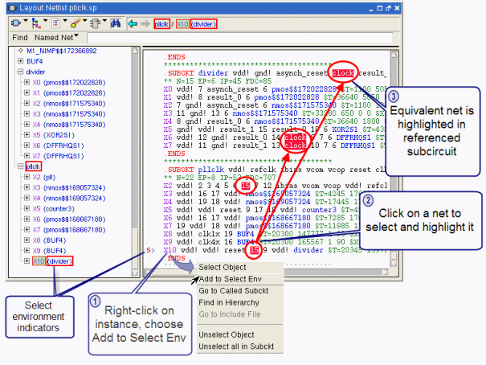

You can extend
the selection and highlighting of nets to include equivalent nets
in a referenced subcircuit by defining a “select environment”. Only
one instance may be part of the extended select environment at a
time. This feature can be used to trace pins from lower levels to
upper level cells.
Procedure
- Choose View > Schematics to view the netlist
in the Internal Schematic viewer.
- Navigate to the desired instance,
right-click and choose Add to Select
Env.
A red S appears to the left of the instance
in the text view, and red boxes surround the subcircuits in the
hierarchy view.
- Click in a net within the
instance.
The net is highlighted both
in the current subcircuit (as usual) and equivalent nets are highlighted
in the referenced subcircuit (the “extended select environment”).
Figure 1 illustrates using the select environment
option.
Figure 1. Extended Select Environment
in Internal Viewer